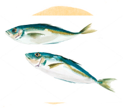

お問い合わせ
| シロギス・イシモチ | アジ | |
|---|---|---|
| 大人10名まで | 85,000円／隻（貸し竿サービス） | 95,000円／隻（貸し竿500円／１本） |
| 10人以上 | １名様につき 大人8,500円／小中学生 4,000円 |
１名様につき 大人9,500円／小中学生 5,000円 |
※釣り時間は、その日の天候などにより変わります。※貸し竿を破損、紛失した場合は、実費を頂戴しますので、予めご了承ください。
※キャンセル料は、乗船日より30日～15日前までは料金の20％、14日～8日前は料金の30％、7日～前日は料金の50％、当日は料金の100％となります。
芝浦のオフィス街を出航し、レインボーブリッジ、スカイツリー、大井埠頭のクレーン群、羽田空港を離着陸する大迫力の飛行機を真上に眺めながら、いざ大海原へ。湾内を行き交う大型客船や帆船、夜景で有名な川崎の京浜工業地帯など、海ならではの景色に出会うのも釣りの楽しみの一つです。
ゑびやの釣り船は大型休憩室や個室水洗トイレなど女性の方に優しい作りでとなっております。必要な道具もご用意しておりますので、お子様から大人までどなたでもお気軽に釣りをお楽しみいただけます。
①集合・出船 8:00
※集合時間は通常7:00〜8:00ですが8:00以降でも構いません
②景色を味わいながら釣り場へ
③釣り開始 9:00〜
魚たちの群れは常に移動を続けています。探知機と勘を頼りにポイント移動。
④釣り場出発 14:30
⑤帰港・休憩 15:30頃
⑥釣った魚で二次会 18:00〜
帰港後の二次会は、ゑびや桟橋前にある運河沿い美食レストラン「FOCUS shibaura」をおすすめします。釣った魚をシェフが調理して提供するコースもあります。ご予算等お気軽にお声がけ下さい。※日程によりご要望に添えない場合があります。ご予約時ご確認ください。
一言で言うと「貸切船」の事を言います。仲間内で船を貸し切ってワイワイ楽しめるのが「仕立船」です。「乗合船」との決定的な違いは出船時間や帰港時間を自由に決められる点です。仲間同士の集まりなので自由が利き、中には寿司職人を船に乗せ、釣った魚をその場で握らせる粋な舟遊びを愉しまれるお客様もいらっしゃいます。
季節に適した動きやすい服装をお心がけ下さい。海上では移動中に波しぶきを被ったり、急に天候が変わって雨が降ることが多いため雨具は必需品です。足元は防水性のある滑りづらい靴、長靴が適しています。夏の服装（サングラス、帽子、薄手の長袖や上着、日焼け止め）冬の服装（フリースなどのジャケット、しっかりとした雨合羽、ホッカイロ）
釣った魚を持ち帰るための入れ物（クーラーボックス）が必要です。氷はこちらで用意致します。昼食は各自でご用意ください。（お湯、電子レンジあります）熱中症予防の為にも、飲料水は十分お持ちください。
体調管理が大切です。釣り前日はアルコールを控え、しっかり睡眠をとりましょう。寝不足、疲れ、二日酔いは禁物です。乗船前は空腹を避け、心配な方は酔い止め薬を飲んでおきましょう。
駐車場はございませんので、近くのコインパーキングをご利用下さい。乗船所に最も近い 「みなとパーク芝浦」内の駐車場がお薦めです。
基本的には雨でも出船致しますが、強風・荒天などで中止にする場合があります。 遅くとも前日までに船長が最終判断し、お客様にご連絡致します。
船長 若狭
東京都港区芝浦３丁目１鹿島橋（JR田町駅、都営三田駅より徒歩5分）
東京都港区芝浦３丁目１鹿島橋（JR田町駅、都営三田駅より徒歩5分）